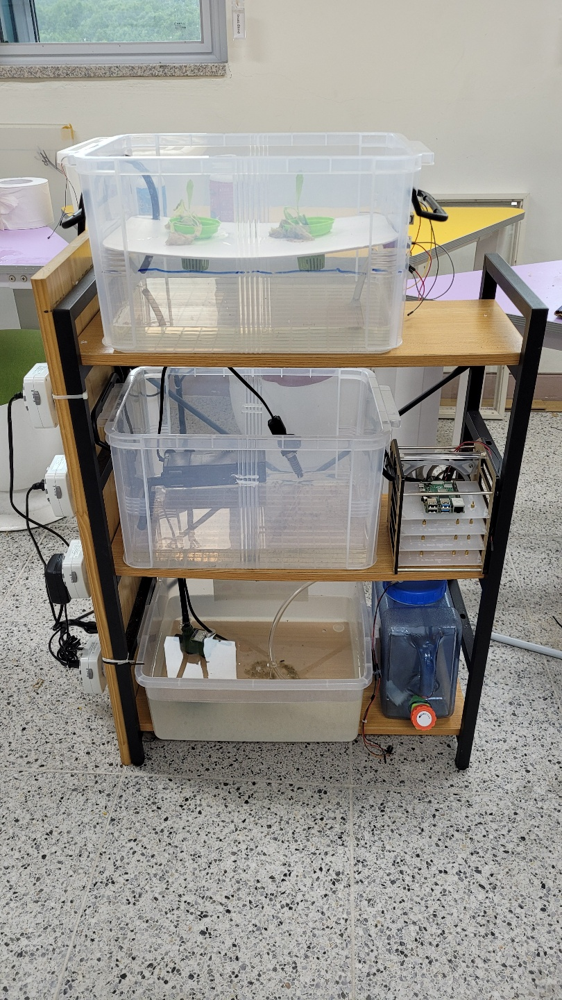
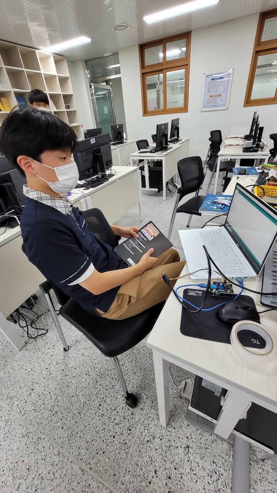
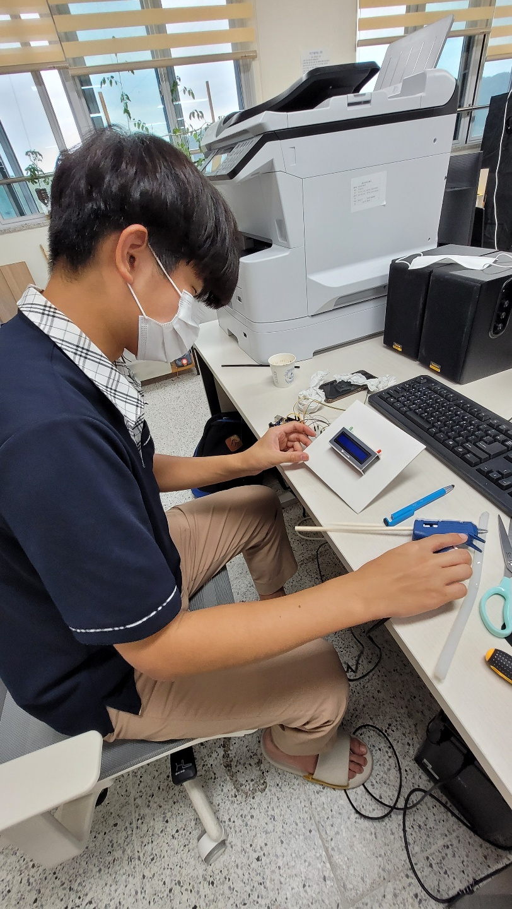
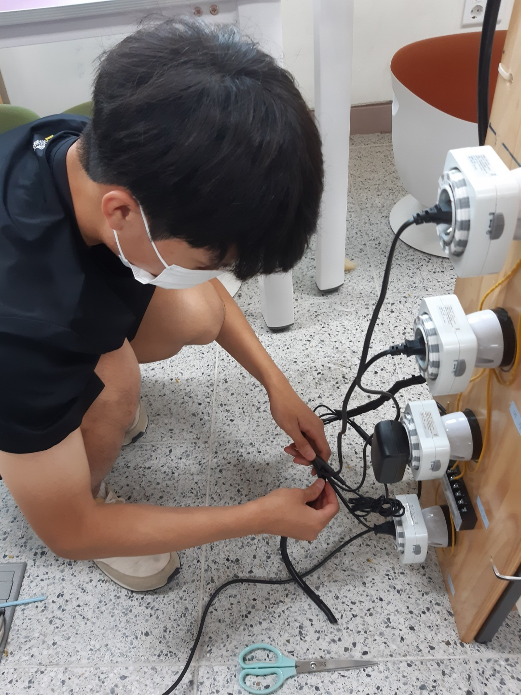
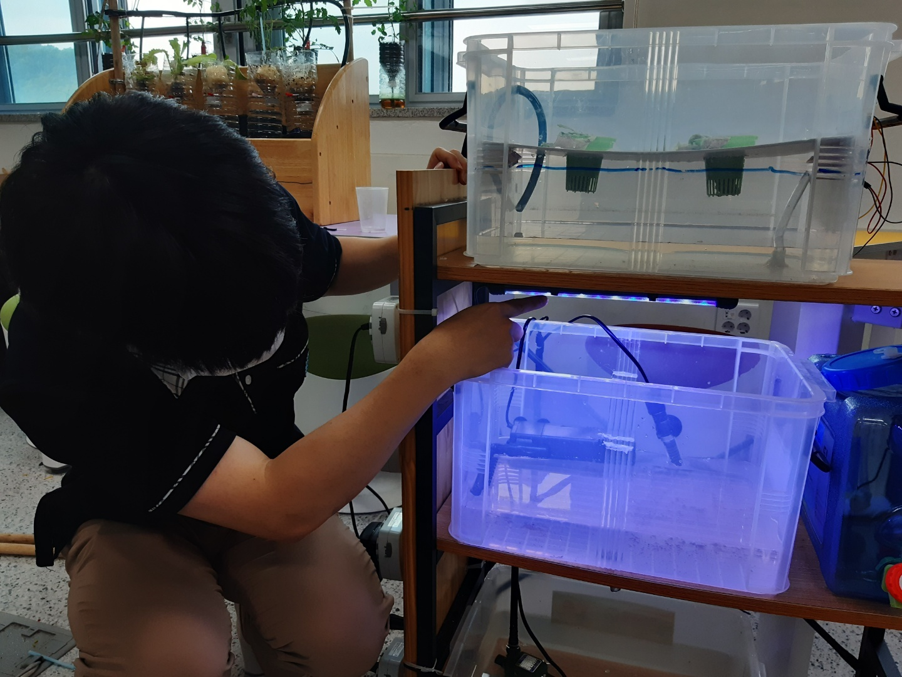
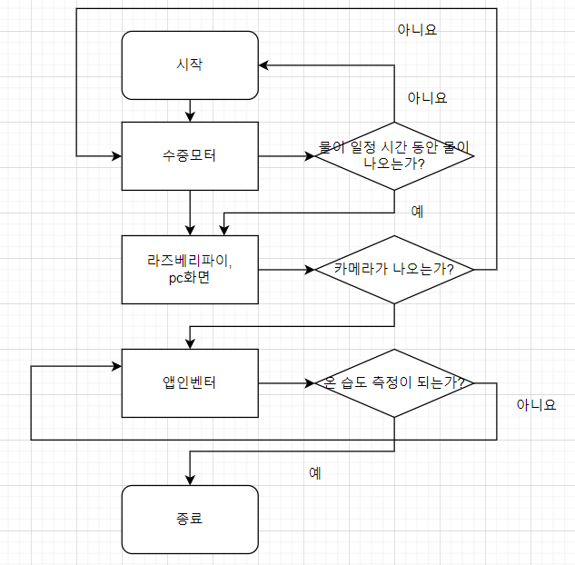

1. 프로젝트 주제: 아쿠아포닉스

개발 동기: 식물에게 물을 주는 것이 귀찮은 분들도 계시고 아니면 물을 주시기 힘든 분이 계시기 때문에 저희가 그것을 해소하기 위해 만들게 되었습니다.
수행 목표 : 식물에게 일정 시간 동안에만 물을 자동으로 주면서, 온도와 습도를 측정하고 카메라로 보는 것이 저희 목표 입니다.
2. 팀원 소개 및 역할
사진:    
이름: 동윤, 우섭, 진우, 승완
이메일: a66152208@gmail.com
역할: 소프트웨어- 배동윤, 김우섭, 하드웨어 - 정진우, 서승완
깃허브: https://github.com/Youngbin2208/Soursecode
3. 사용기술 및 플랫폼
개발에 사용한 기술: 아두이노, 라즈베리파이
개발에 소요된 물품 및 준비물 : 수중 모터,수족관 led, 히터기, 여과기, 호스, 아두이노, 라즈베리파이, lcd
4. 상세 소개 (레이아웃)
레이아웃 세부 설명
왼쪽에서부터 1번째가 수중펌프, 2번째 여과기, 3번째가 led, 4번째가 히터기 입니다. 1층이 식물이 자라고 2층이 어항에서 물고기를 키우는 공간이고, 3층이 공급 역할 이며 그게 돌아가면서 수중펌프가 물을 위로 올려주고 여과기가 물을 정화 하고, led가 조명 역할, 히터기는 온도 조절 입니다.
시스템 구조
저희가 만든 아쿠아 포닉스는 아두이노, 타이머, 수중펌프, 히터기, 등을 활용하여 만든 시스템으로 1층, 2층, 3층 순으로 나누어져 있으며 1층에는 식물이 자라는 공간, 2층은 어항이며 3층은 물을 공급하며 3층에서 수중모터가 물을 빨아드려서 1층에 식물이 자라는 공간에 물을 주며 일정 이상 물이 찰 경우 밑에 2층에 물이 가며 그리고 2층에도 일정 이상 물이 찰 경우 3층으로 다시가는 순환 시스템 입니다.
세부 수행 과정
영빈 - 라즈4+ 카메라모듈 = 24시간 표시 및 부착 (노트북 관리), 배선 정리, putty (pc통신) 우섭 - 아두이노 온습도 개발+lcd = 24시간 표시 및 부착 동윤 - 앱인벤터(온습도 센서) 블록 (s/w) 승완 - 기구부 조립 및 구멍 작업, 수중펌프 220v 부착, LED(상부)부착 진우 - 기구부 조립, 아이디어(호스 구멍 크기, 위치), 시연, 디자인 삼단 설계, ppt(중간 ppt, 발표), 배선 정리
5. 사용자 흐름도 / 데이터베이스 / 서비스 플로우

6. 프로젝트 링크
- 결과물 링크 : https://youngbin2208.github.io/Fish_guardians/
- 깃허브 리포지토리 : https://github.com/Youngbin2208/Soursecode
7.프로젝트 추진 결과
-결과 분석
한번 저희가 만들어 보았는데 되는 부분들도 있었으나 문제들에 부딪히기도 했는데 그래도 전반적인 외형이 나오기도 하고 기술적인게 그래도 되었다는 점이 다행입니다.
-유지 보수
소프트웨어 쪽이나 하드웨어 쪽에 전반적인 것을 수정하고 안된 부분들을 수정을 하고 싶습니다. 그리고 외형 부분에서도 다른 부분에서도 분명 부족한 부분들을 매우거나 할 것입니다.
8.결과 및 발표 자료
-프로젝트 소개 영상/ 팀 소개 영상: https://youtu.be/qodatA5EYRM / https://youtu.be/IxkjiuZpPLc
-계획 발표 자료 -중간 발표 자료 -최종 발표 자료는 깃허브에 탑재되거나 제출하였습니다.